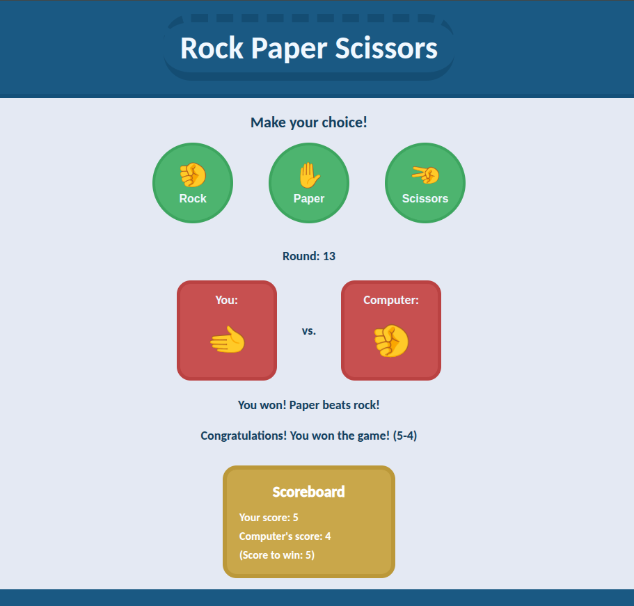

Hello, I'm Pedro Augusto! This is a brief showcase of my projects from the Foundations Course of The Odin Project. The course offers a hands-on introduction to the essential tools required to build real, functional websites. These projects mark the beginning of my journey into full stack development. While they are simple, I've put care and effort into each one to build a solid foundation in HTML, CSS, and JavaScript.
 Repository
RepositoryProject: Odin Recipes
It's a basic recipe website. It consists of a main index page which have links to a few recipes. This was my first project using HTML and CSS. Many of the buttons on the website are just decorative, since the intention of the project was to learn the initial fundamentals of building a web interface.


Project: Landing Page
It's a landing page for a fictional online programming courses platform called Kangaroo. This was my second project using HTML and CSS, where the objective was to learn how to use flexbox in CSS. This tool has now become part of my front-end repertoire.
Project: Rock Paper Scissors
It's a Rock Paper Scissors game with an UI, where the player plays against the computer. This was my first practical project using JavaScript. This time, the focus was not on the interface itself, but on learning the language that will be the basis for the back-end of larger projects.


Project: Etch A Sketch
It's a browser version of a sketchpad. This sketchpad consists on a grid such that the user can paint or erase each square. It's possible to change the grid dimensions and toggle colorful and darkening modes. In this project, I practiced a lot the use of events and manipulation of the DOM tree in JavaScript. I also added a very cool style to the interface.
Project: Calculator
This is a traditional web-based calculator that supports the four basic arithmetic operations. It's possible to interact using either the mouse or the keyboard. Additionally, there are three available styles for the calculator: Modern, Classic and Mint. This was the last project of the foundations course. Here, I applied everything I learned and even brought some extra features to those that were suggested in the course. I really enjoyed doing it.